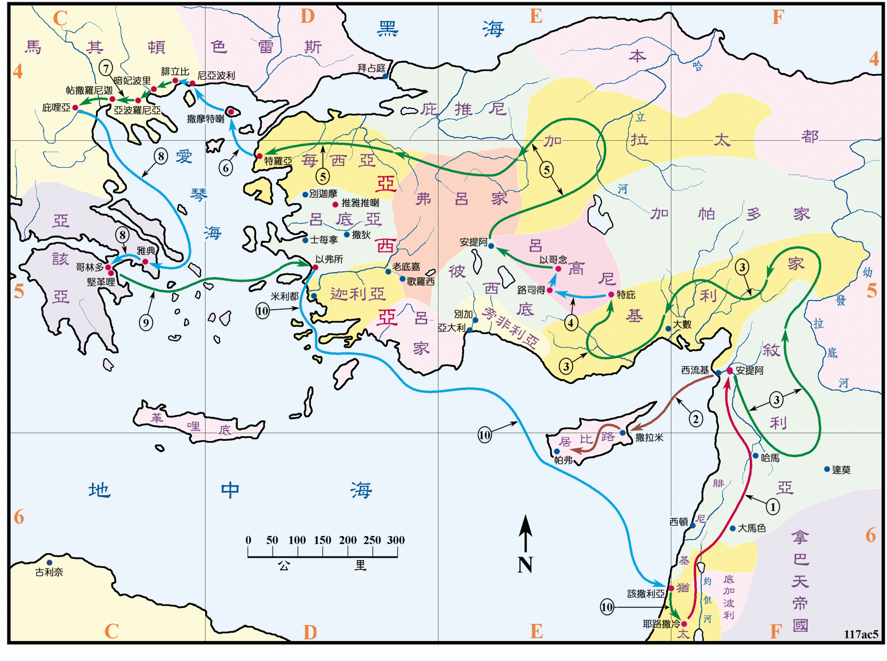

约是在主后48至51年之间

行动线说明
| 序号 | 圣经 | 说明 |
|---|---|---|
| 1 | 徒15:22-38 | 保罗和巴拿巴被差遣从耶路撒冷到安提阿去工作。 |
| 2 | 徒15:39 | 巴拿巴和马可去居比路。 |
| 3 | 徒15:40-41 | 保罗走遍叙利亚和基利家坚固众教会。 |
| 4 | 徒16:1-5 | 保罗到特庇、路司得和以哥念。 |
| 5 | 徒16:6-10 | 保罗经弗吕家、加拉太、每西亚，到了特罗亚。 |
| 6 | 徒16:11-40 | 保罗到腓立比。 |
| 7 | 徒17:1-14 | 保罗到帖撒罗尼迦、庇哩亚。 |
| 8 | 徒17:15-18:18 | 保罗到雅典、哥林多。在哥林多住了一年半。 |
| 9 | 徒18:19-21 | 保罗到以弗所。 |
| 10 | 徒18:22 | 经该撒利亚返耶路撒冷。 |
保罗第二、三次的旅行布道，把福音传到了欧洲，先是马其顿，后是希腊，这是希腊文化的中心，有雅典、哥林多等文化和商业大城，这都是极为繁荣之地，但也充满了异教和罪恶，那里有一些犹太人仍然抗拒和毁谤他，但是保罗仍然在各处建立许多的教会。
保罗在哥林多写了帖撒罗尼迦前书和后书，加拉太书也可能是在哥林多所写。